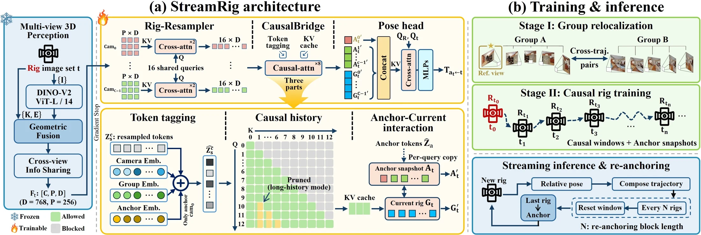
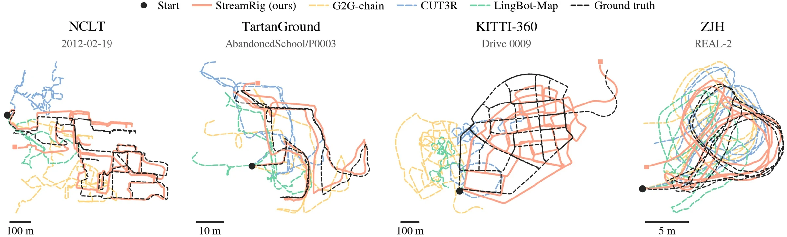
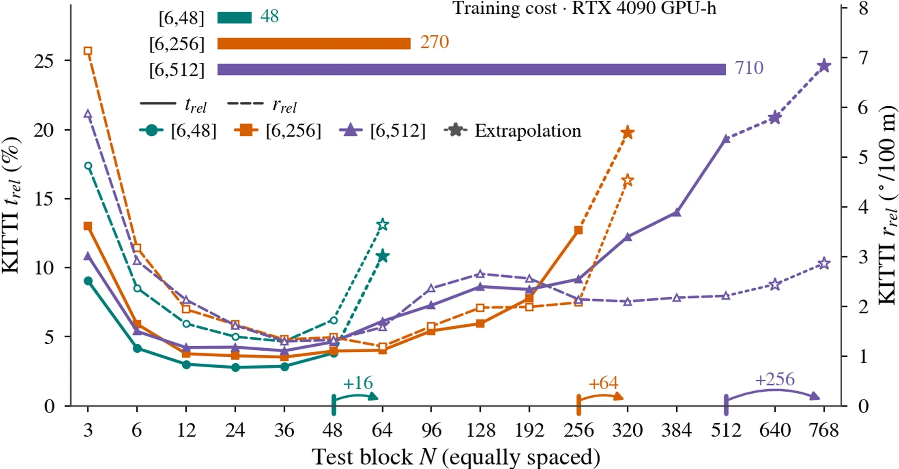

StreamRig: Exploiting Intra-Rig Geometry
for Streaming Multi-Camera Odometry
Joint rig geometry. Compact causal state. Continuous odometry.
Frozen multi-view geometry becomes causal rig odometry, with only 74.6M trainable parameters.
Abstract
Mobile robots and vehicles carry synchronized multi-camera rigs, yet many streaming 3D foundation models are designed for monocular input, leaving efficient use of rig geometry a challenge. We present StreamRig, a freeze-and-stream framework that builds causal streaming odometry for calibrated rigs on a frozen multi-view 3D foundation model.
The frozen front-end jointly perceives synchronized views using rig calibration. A Rig-Resampler compresses their features, a CausalBridge applies causal attention with a key-value cache, and a lightweight head regresses rig poses. Periodic re-anchoring supports long sequences. Only these modules are trained—74.6M parameters—with relative poses as the sole supervision.
Two-stage training transfers group relocalization ability to causal rig odometry. We evaluate on NCLT, TartanGround, KITTI-360, and the ZJH humanoid-robot dataset, where real-world evaluation uses simulation-trained weights. Across all four datasets, StreamRig achieves lower translation and rotation drift than the evaluated non-oracle monocular streaming and rig-aware offline models.
Method
Perceive the rig jointly, compress its geometry, and carry it through a causal stream.

Joint geometry
Every arriving rig is encoded once, with camera calibration supplied to the frozen multi-view model.
Compact causal state
Each camera contributes 16 latent tokens. Each query interacts with its own anchor snapshot and cached history.
Periodic re-anchoring
The last rig becomes the next anchor. Relative poses compose into a continuous trajectory with bounded active state.
Experimental Results
Four rigs spanning campus navigation, simulation, urban driving, and a humanoid robot.

Streaming odometry on four rigs
| Method | Cameras | NCLT5-cam surround · 2 traj. / 12.29 km | TartanGround4×90° ring · 10 scenes / 12.60 km | KITTI-360stereo + 2 fisheye · 2 scenes / 13.63 km | ZJH (real robot)stereo + 2 oblique · 3 scenes / 0.36 km | ||||||||
|---|---|---|---|---|---|---|---|---|---|---|---|---|---|
| trel | rrel | ATE | trel | rrel | ATE | trel | rrel | ATE | trel | rrel | ATE | ||
best second best · trel (%) · rrel (°/100 m) · ATE (m) · lower is better · grey: oracle with ground-truth relative pose
Ablations and analysis
Ablations, one factor at a time
| Group | Variant | NCLT | TartanGround | ZJH (real) | |||
|---|---|---|---|---|---|---|---|
| trel | rrel | trel | rrel | trel | rrel | ||
Design choices matter. Mixed windows, displacement-normalized translation, and the per-query anchor snapshot all reduce drift; removing group-relocalization pre-training increases translation drift by 4.6–14.9×.
Mono, stereo, and full rig on KITTI-360
| Cameras | trel ↓ | rrel ↓ | SE3 ↓ | Sim3 ↓ |
|---|
More cameras, less drift. The stereo pair adds depth, and the two side cameras widen the view; the full rig is best on every metric.
Frozen front-end on NCLT
| Front-end | trel (%) at N | Best | ||||
|---|---|---|---|---|---|---|
| 6 | 12 | 24 | 48 | trel | rrel | |
A swappable front-end. Depth Anything 3 and π³X also work as frozen front-ends; MapAnything, which conditions on camera rays, exposes rig geometry most directly.
Re-anchoring distance and training horizon

Re-anchoring sets the operating point. Drift is lowest at intermediate intervals; longer training windows extend the usable range at higher cost.
Compute and memory budget per arrival
| Method | Input | ms ↓ | Thr. ↑ | Mem ↓ |
|---|
A whole rig for less than one monocular frame. StreamRig processes five cameras in 26.2 ms with 2.6 GiB, faster than the fastest monocular streamer on a single frame.
Video
The method and synchronized trajectory comparisons across all four datasets.
Citation
@misc{wei2026streamrig,
title = {StreamRig: Exploiting Intra-Rig Geometry
for Streaming Multi-Camera Odometry},
author = {Anonymous Authors},
year = {2026},
note = {Manuscript}
}